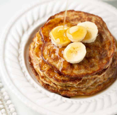

Home
Banana Oat Pancakes Recipe

Description
These are super easy three ingredient pancakes! They are great for when you have one banana left over that is starting to get overripe!
Ingredients
- 1 ripe banana
- 2 eggs
- 1/4 cup oats
- pinch of salt
- pinch of cinnamon
- handful of pecans (optional)
- spoonful of nut butter (optional)
- oil/butter for cooking
Steps
- Mash the banana with a fork. Whisk in the eggs, oats, salt and cinnamon until smooth.
- Add the optionals and mix into the batter if desired.
- Heat a tablespoon or so of coconut oil/butter in a non-stick skillet over medium-low heat. Cook for about 2 minutes, until set. You’ll want to make sure the heat isn’t too high so they don’t burn. (Add a few chocolate chips if you like!) Cook on the other side for another 30 seconds.Heat a tablespoon or so of coconut oil/butter in a non-stick skillet over medium-low heat. Cook for about 2 minutes, until set. You’ll want to make sure the heat isn’t too high so they don’t burn. (Add a few chocolate chips if you like!) Cook on the other side for another 30 seconds.
- Serve with bananas and maple syrup. Enjoy!
Original recipe link